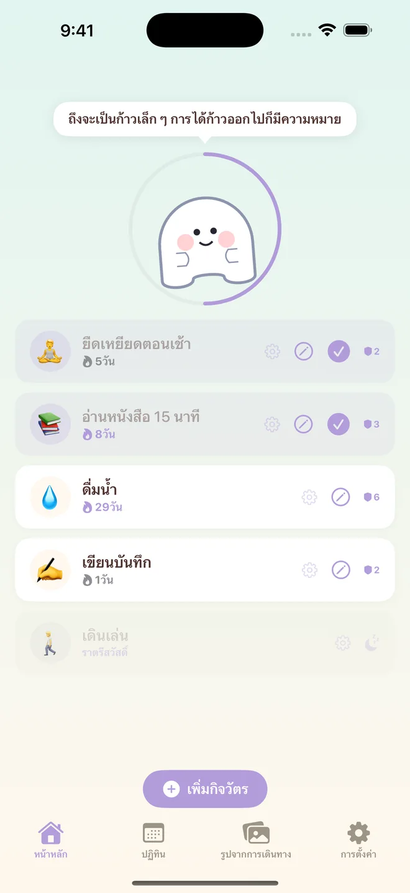
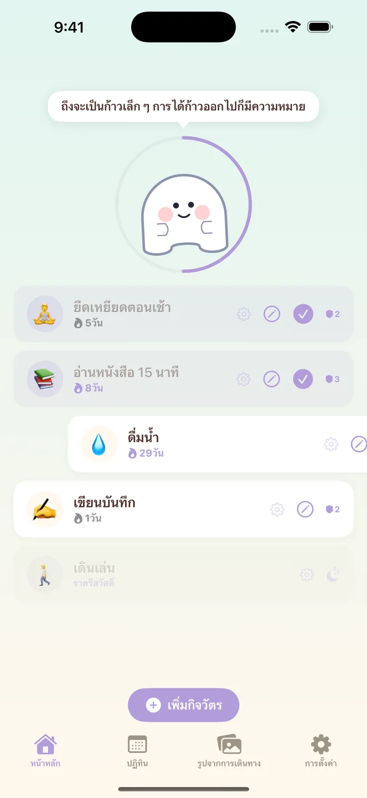
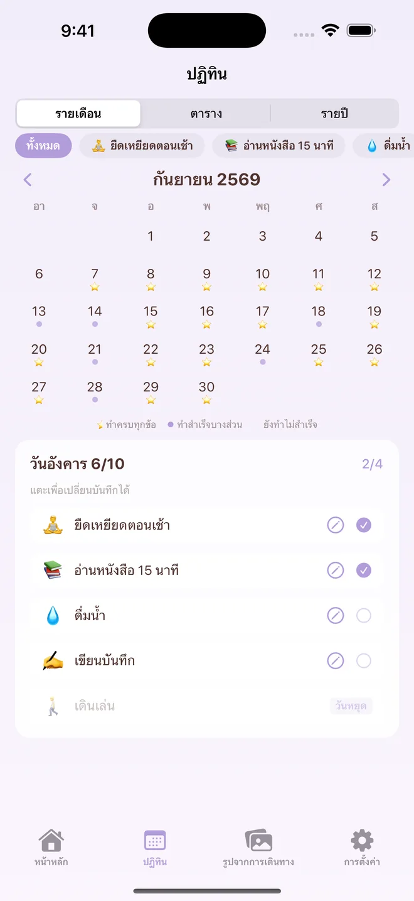

วันนี้รู้สึกเหมือนมารุตโตะจะโชคดีจัง! ไม่มีเหตุผลหรอก!
เพื่อนช่างคุย ช่วยให้การสร้างนิสัยสนุกขึ้น
เปลี่ยนนิสัยทุกวัน
ให้เป็นการผจญภัย
ทำกิจวัตรครบทุกข้อของวัน แล้วรับรูปจากการเดินทางหนึ่งใบ มีมารุตโตะคอยเชียร์และรูป 250 แบบให้ค้นพบ ทุกก้าวเล็กๆ มีความสนุกรออยู่
iPhone และ iPad / ฟรี มีโฆษณา / ไม่ต้องสมัครบัญชี
รู้จักมารุตโตะ
250รูปจากการเดินทางให้สะสม


วันนี้รู้สึกเหมือนมารุตโตะจะโชคดีจัง! ไม่มีเหตุผลหรอก!
250รูปจากการเดินทางให้ค้นพบ
✓ปัดครั้งเดียวเพื่อบันทึกความสำเร็จ
FREEฟรี ไม่ต้องสมัครบัญชี
MEET YOUR CHATTY LITTLE COMPANION
เพื่อนช่างคุย
ความสนุกที่รอทุกวัน
ชมคุณ ให้กำลังใจ และบางทีก็ชวนยิ้มกับเรื่องขำๆ มารุตโตะ ภูตแห่งการสร้างนิสัย อยู่ข้างทุกก้าวเล็กๆ ของคุณ วันนี้จะเล่าอะไรให้ฟังนะ
ว้าว! คุณทำ “อ่านหนังสือ” แล้ว! มารุตโตะประทับใจจัง!
การพักไม่ใช่เรื่องแย่ มารุตโตะรับรอง!
มีเมฆเกาะอยู่บนยอดฟูจิ เราก็อยากได้หมวกบ้างจัง
เลือกช่วงเวลาที่สนใจ แล้วลองอ่านเรื่องคุยของมารุตโตะ
ตัวอย่างข้อความที่มีอยู่ในแอป
คำทักทายเล็กๆ ทุกครั้งที่เจอ
คำทักทายที่เปลี่ยนตามช่วงเวลาและฤดูกาล พร้อมความคิดน่ารักๆ ที่อาจทำให้ยิ้มได้
ดีใจกับทุกความสำเร็จไปด้วยกัน
แม้เป็นความก้าวหน้าเล็กๆ มารุตโตะก็พร้อมชม ให้ก้าวต่อไปมีเรื่องน่ารอ
อยู่ข้างคุณในวันพักด้วย
วันที่ไม่เป็นไปตามหวัง ยังมีกำลังใจอ่อนโยนให้เริ่มใหม่ตามจังหวะของตัวเอง
01 — LITTLE BY LITTLE
ก้าวเล็กๆ
กับรอยยิ้มในทุกวัน
ยืดเส้น อ่านหนังสือหนึ่งหน้า ดื่มน้ำหนึ่งแก้ว เริ่มจากสิ่งเล็กๆ แล้วให้มารุตโตะคอยเป็นกำลังใจ
01

A SMALL STEP FORWARD
ทำสำเร็จแล้ว!
แค่ปัดครั้งเดียว
ปัดเพื่อทำเครื่องหมายว่ากิจวัตรสำเร็จแล้ว ยกเลิกการทำสำเร็จหรือแก้ไขบันทึกย้อนหลังจากปฏิทินได้
แตะเพื่อสัมผัสความสำเร็จเล็กๆ
ตัวอย่างบนเว็บไซต์
ไม่ว่าจะเป็นวันที่ทำได้ดีหรือวันที่ทำได้ไม่เต็มที่ มารุตโตะก็จะคอยให้กำลังใจคุณ
EVERY LITTLE DAY COUNTS
วันที่ทำต่อเนื่อง
จะกลายเป็นความมั่นใจ
ทบทวนสิ่งที่ทำในแต่ละวันได้จากปฏิทินรายเดือน ตารางแยกตามกิจวัตร และบันทึกรายปี อีกทั้งเขียนบันทึกช่วยจำของแต่ละกิจวัตรได้
02

02 — A WORLD OF LITTLE REWARDS
จากนิสัยในทุกวัน
สู่โลกที่รอให้ค้นพบ
250✦
รูปจากการเดินทางให้สะสม


ทำกิจวัตรต่อเนื่อง สะสมความทรงจำ
ทำกิจวัตรครบทุกข้อในหนึ่งวันแล้วรับรูปจากการเดินทาง 1 ใบ เพลิดเพลินกับรูป 250 แบบ บันทึกการเดินทางของมารุตโตะ และเกร็ดความรู้ นอกจากนี้ยังรับรูปโบนัสได้จากการดูโฆษณาวิดีโอ
แชร์รูปถ่ายและบันทึกการเดินทาง
ขยายดูรูปที่ชอบ แล้วแตะปุ่มแชร์เพื่อแบ่งปันรูปกับบันทึกการเดินทาง พร้อมลิงก์แอปและ #MaruttoTracker
03 — AT YOUR OWN PACE
นิสัยที่เข้ากับจังหวะชีวิตของคุณ
ปรับให้เข้ากับจังหวะชีวิตของคุณ
ตั้งวันทำกิจวัตร การเตือน และเวลาแบ่งวันได้ วิดเจ็ตบนหน้าจอหลักยังช่วยให้ตรวจดูความคืบหน้าของวันนี้ได้ด้วย
ใช้โล่ช่วยรักษาสถิติต่อเนื่อง
ทำต่อเนื่องครบ 7 วันแล้วรับโล่ คุณเปิดหรือปิดการใช้โล่เพื่อรักษาสถิติในวันที่เผลอลืมได้ในการตั้งค่า
รองรับการตั้งค่าภาษาและภูมิภาค 18 แบบ
เลือกภาษาที่ชอบเพื่อใช้งานหน้าจอ อ่านคำพูดของมารุตโตะ และบันทึกการเดินทาง
ใช้งานฟรีไหม?
ดาวน์โหลดและใช้งานได้ฟรี แอปมีโฆษณาและวิดีโอที่เลือกรับชมเพื่อรับรูปจากการเดินทางเพิ่มเติมได้
ต้องสมัครบัญชีไหม?
ไม่ต้องสมัครบัญชี บันทึกกิจวัตรจะเก็บไว้ในอุปกรณ์ของคุณ ใช้ได้กับ iPhone และ iPad ที่ใช้ iOS 17 ขึ้นไป